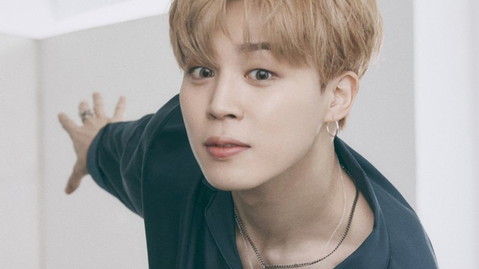
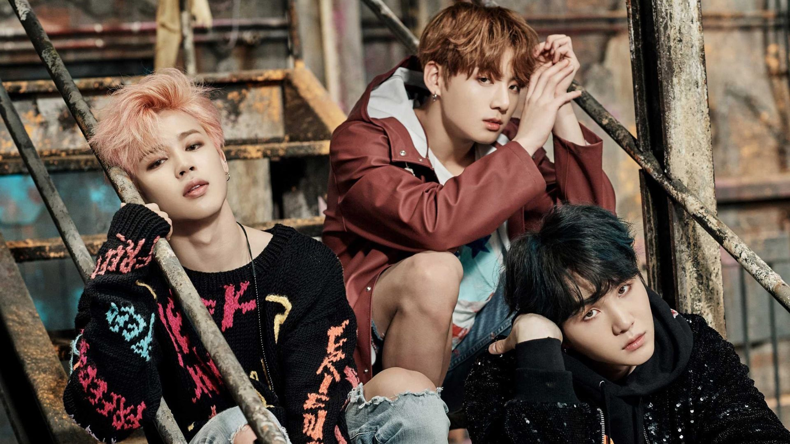
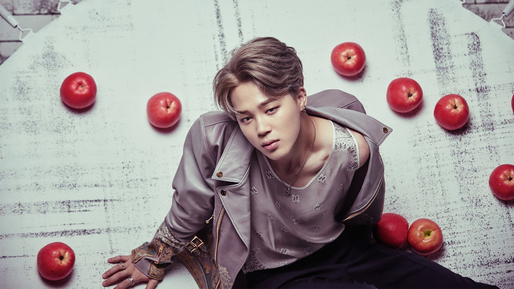
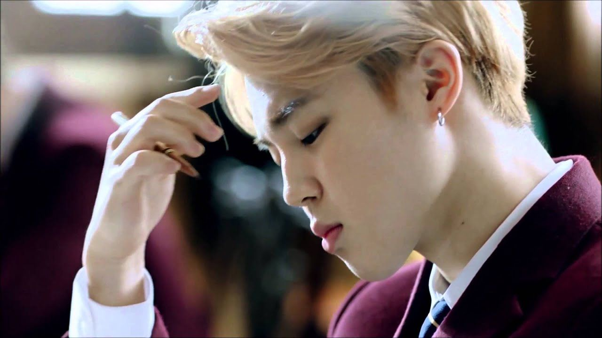
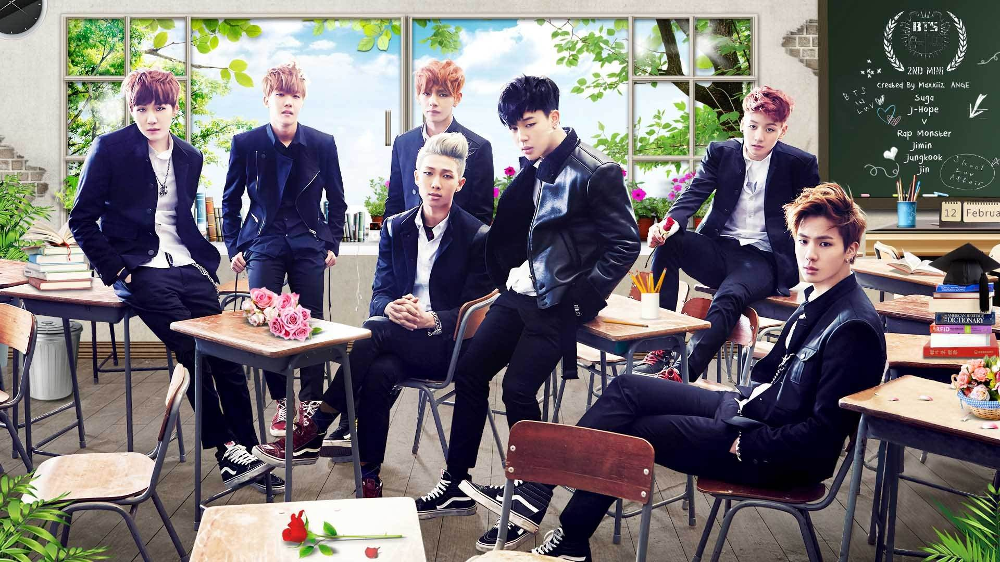

Park Ji-min
Park Ji-min, nascido em 13 de outubro de 1995, mais frequentemente creditado na carreira musical apenas como Jimin, é um cantor e dançarino sul-coreano. Jimin ganhou destaque mundial como membro do grupo masculino BTS (também conhecido como Bangtan Boys), formado em 2013. O grupo vendeu mais de dezesseis milhões de álbuns físicos só na Coreia do Sul, de acordo com o Gaon Music Chart, e se tornou o projeto musical com o maior número de vendas a se estrear na década de 2010.

Em 2018, ele foi premiado com a Ordem de Mérito Cultural Hwagwan da quinta classe pelo Presidente da Coreia do Sul, Moon Jae-in. Jimin estabeleceu um recorde e uma nova marca para cantores coreanos com as canções "Lie" (2016), "Intro: Serendipity" (2017) e "Serendipity (Full Length Edition)" (2018), ao atingir 50 milhões de streams no Spotify em 2019, com cada canção.
Vida e carreira
Jimin nasceu em Busan, Coreia do Sul, em 13 de outubro de 1995. Sua família é constituída por seus pais e seu irmão mais novo, Park Ji-hyun. Durante sua 8ª série começou a dançar popping. Jimin tornou-se ativo na cena de dança em Busan desde o ensino médio, juntando-se a muitos grupos de dança de rua, vencendo várias competições de talento com suas habilidades de canto também. Depois de assistir as apresentações de Rain, ficou interessado em se tornar um performer, sendo ativo como um dançarino em muitos lugares por algum tempo.
Estudou na Busan Arts High School onde praticou dança moderna. Juntou-se a Big Hit Entertainment após uma audição bem sucedida em Busan como parte da Big Hit's "Hit It", em 2011, interpretando a canção "I Have a Lover", depois que seu professor de dança de sua escola o recomendou para fazer uma audição em uma empresa de entretenimento. Após ser aceito na Big Hit, se transferiu para a Korea Arts High School.
Aparições na televisão e reconhecimento solo
Em 19 de fevereiro de 2016, o diretor do Human Condition anunciou que Jimin, juntamente com J-Hope, participaria do programa. O produtor comentou: "Nós vamos estar gravando o show centrado em torno de Jimin e J-Hope. V também vai se juntar a eles, eventualmente." Ele acrescentou: "A primeira gravação do show com eles acontecerá no final de fevereiro e irá ao ar no início de março." Um meio de comunicação informou que Jimin e J-Hope, participariam do programa agindo como netos para uma avó que só tem netas. Com o cancelamento do programa no mês seguinte, devido a baixa audiência, sua participação foi cancelada. O primeiro álbum compilatório em coreano do BTS e o final de sua "série juvenil", The Most Beautiful Moment in Life: Young Forever, foi lançado em maio de 2016.
O álbum contou com três singles: o hit top 40 "Epilogue: Young Forever", o hit top 10 "Fire", e o hit top 20 "Save Me". O álbum liderou o Gaon Weekly Chart na Coreia por duas semanas consecutivas e alcançou o número 107 na Billboard 200 dos Estados Unidos. Em julho de 2016, fez uma aparição no programa da MBig TV Celebrity Bromance. Em 30 de julho, apareceu como MC especial do programa Show! Music Core, juntamente com Jeon Jung-kook. Em agosto do mesmo ano, apareceu no show de variedades God's Workplace, juntamente com J-Hope. O programa traz o lema "vamos vender tudo e qualquer coisa" e gira em torno de celebridades que se transformam em trabalhadores de escritório.
Influências e estilo
Park cita o cantor Rain como uma de suas principais inspirações e razões pelas quais ele quis se tornar um cantor e performer. Como membro do grupo BTS seu estilo musical e a imagem inicial foram influenciados pelo hip hop, como em "No More Dream" e "N.O." lançados em 2013. Em contraste, "Serendipity", seu solo para o álbum Love Yourself: Answer, foi lançada em 2018 como uma canção de R&B alternativo com uma melodia suave e sensual, desvendando a alegria, a convicção e a curiosidade do amor.
